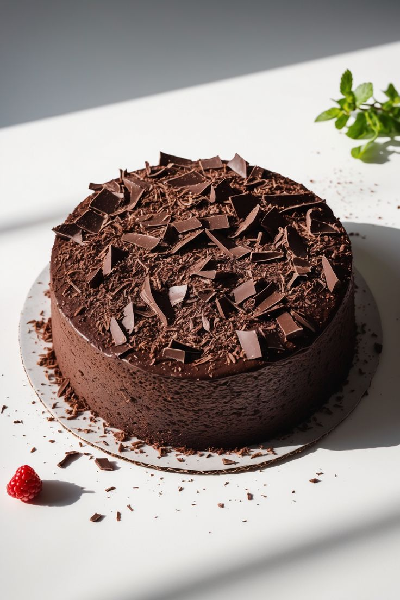
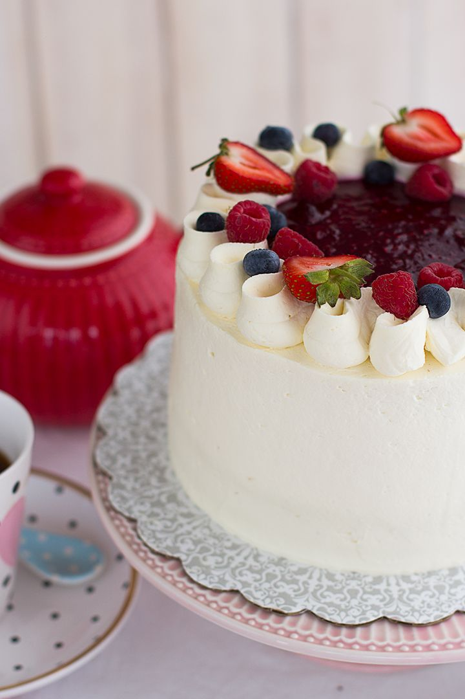
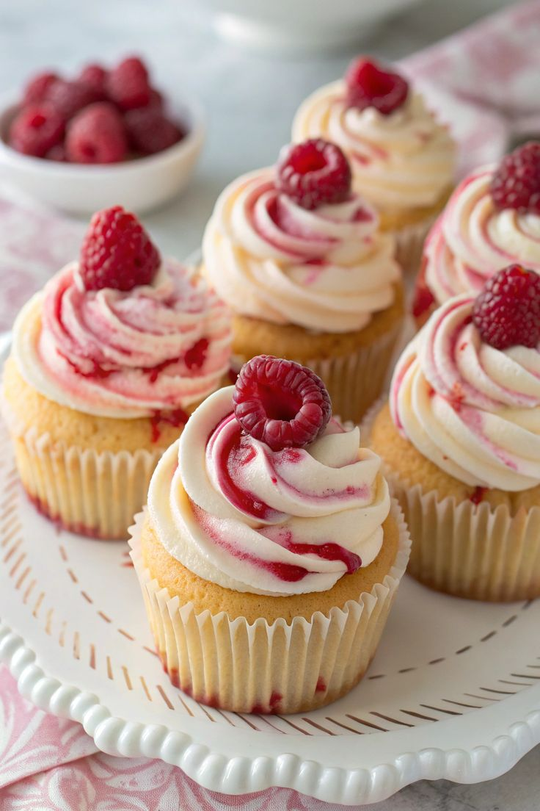

Receta de Torta Red Velvet

📝 Ingredientes:
- 2 tazas de harina
- 1 taza de azúcar
- 1/2 taza de mantequilla
- 2 huevos
- Colorante rojo
👩🍳 Preparación:
- Precalentar el horno a 180°C.
- Mezclar los ingredientes secos en un tazón.
- Batir los ingredientes húmedos en otro tazón.
- Combinar ambas mezclas y agregar colorante rojo.
- Verter en un molde y hornear por 30 minutos.
Receta de Torta de Chocolate

📝 Ingredientes:
- 200g de chocolate negro
- 1 taza de harina
- 1/2 taza de mantequilla
- 3 huevos
- 1 taza de azúcar
👩🍳 Preparación:
- Precalentar el horno a 180°C.
- Derretir el chocolate y dejar enfriar.
- Batir la mantequilla con el azúcar hasta obtener una mezcla cremosa.
- Agregar los huevos uno a uno, mezclando bien después de cada adición.
- Incorporar el chocolate derretido y mezclar.
- Verter en un molde y hornear por 25 minutos.
Receta de Torta de Tres Leches

📝 Ingredientes:
- 1 taza de harina
- 1 lata de leche condensada
- 1 lata de leche evaporada
- 1 taza de crema de leche
- 3 huevos
👩🍳 Preparación:
- Precalentar el horno a 180°C.
- Preparar un bizcocho esponjoso y hornear.
- Mezclar las tres leches en un tazón.
- Una vez que el bizcocho esté frío, perforar con un tenedor.
- Verter la mezcla de leches sobre el bizcocho.
- Dejar reposar en el refrigerador por varias horas.
Receta de Cupcake de Frambuesa

📝 Ingredientes:
- 1 taza de harina
- 1/2 taza de mantequilla
- 1/2 taza de azúcar
- 2 huevos
- 1 taza de frambuesas frescas
👩🍳 Preparación:
- Precalentar el horno a 180°C.
- Batir la mantequilla con el azúcar hasta obtener una mezcla cremosa.
- Agregar los huevos uno a uno, mezclando bien después de cada adición.
- Incorporar la harina y la leche alternando, y mezclar hasta obtener una masa homogénea.
- Agregar las frambuesas y mezclar suavemente.
- Verter en moldes para cupcakes y hornear por 20 minutos.
Receta de Cupcake de Arándano
📝 Ingredientes:
- 1 taza de harina
- 1/2 taza de mantequilla
- 1/2 taza de azúcar
- 2 huevos
- 1 taza de arándanos frescos
👩🍳 Preparación:
- Precalentar el horno a 180°C.
- Batir mantequilla y azúcar hasta que esté cremoso.
- Agregar huevos uno por uno.
- Mezclar harina y leche alternadamente.
- Incorporar arándanos frescos.
- Hornear por 18-20 minutos.
Receta de Cupcake de Oreo
- Precalentar el horno a 180°C.
- Triturar galletas Oreo.
- Preparar base de cupcake de chocolate.
- Incorporar galletas trituradas a la masa.
- Hornear por 20-22 minutos.
- Decorar con crema y más Oreos.